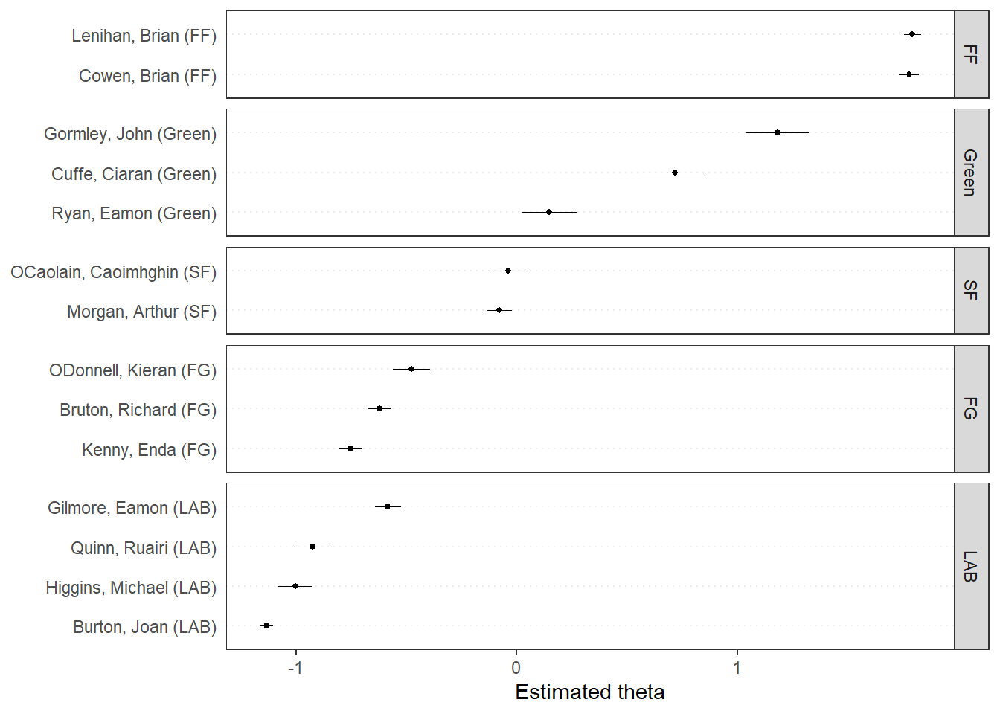
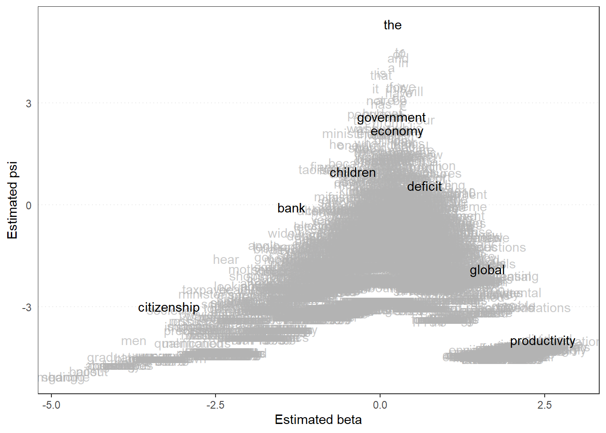

Wordfish is a poisson factor model that, like
Wordscores, tries to scale the ideological positions of
documents. However, rather than needing reference documents,
Wordfish is unsupervised and uses maximum likelihood to
infer both a document’s latent ideological position (\(\theta_{i}\)) and word discriminations
\(\beta_{j}\) – i.e., how strongly a
word separates documents (see
HERE
for our previous discussion on discriminating words).
The model is specified as:
\[ x_{ij} \sim \text{Poisson}(\lambda_{ij}) \] \[ \lambda_{ij} = \exp(\alpha_{j} + \psi_j + \beta_j\theta_i) \] Where:Let’s use the same sample data from our Wordfish example:
| Document | welfare | tax | military | TOTAL |
|---|---|---|---|---|
| Doc 1 | 8 | 2 | 1 | 11 |
| Doc 2 | 1 | 6 | 7 | 14 |
| Doc 3 | 3 | 1 | 0 | 4 |
We’re going to simplify a lot here because the model uses MLE, which involves an interative fitting of the parameters. For a small example like this, we’re going to substitute values for \(\alpha_i\), \(\theta_i\), \(\psi_j\), and \(\beta_j\) that simulate the logic of this process – assuming values greater than 0 discriminate as right-leaning, while those lesser than zero discriminate left
| Parameter | Doc 1 | Doc 2 | Doc 3 |
|---|---|---|---|
| (\(\alpha_i\)) | 2.4 | 2.7 | 1.2 |
| (\(\theta_i\)) | 0.5 | 1.0 | -0.3 |
| Word | (\(\psi_j\)) | (\(\beta_j\)) |
|---|---|---|
| welfare | 0.2 | 0.8 |
| tax | 0.1 | 0.5 |
| military | 0.3 | 1.2 |
From here, we’ll compute the expected counts: \(\lambda_{ij} = \exp(\alpha_i + \psi_j + \beta_j\theta_i)\):
| Word | Document | Formula | Expected Count (\(\lambda_ij\)) |
|---|---|---|---|
| welfare | Doc 1 | \(\exp(2.4_{\alpha_i} + 0.2_{\psi_j} + 0.8_{\beta_j}\cdot0.5_{\theta_i})\) | \(\exp(3.0) \approx 20.1\) |
| tax | Doc 1 | \(\exp(2.4 + 0.1 + 0.5\times 0.5)\) | \(\exp(2.75) \approx 15.6\) |
| military | Doc 1 | \(\exp(2.4 + 0.3 + 1.2\times 0.5)\) | \(\exp(3.3) \approx 27.1\) |
| welfare | Doc 2 | \(\exp(2.7 + 0.2 + 0.8\times 1)\) | \(\exp(3.7) \approx 40.4\) |
| tax | Doc 2 | \(\exp(2.7 + 0.1 + 0.5\times 1)\) | \(\exp(3.3) \approx 27.1\) |
| military | Doc 2 | \(\exp(2.7 + 0.3 + 1.2\times 1)\) | \(\exp(4.2) \approx 66.7\) |
| welfare | Doc 3 | \(\exp(1.2 + 0.2 + 0.8\times -0.3)\) | \(\exp(1.16) \approx 3.1\) |
| tax | Doc 3 | \(\exp(1.2 + 0.1 + 0.5\times -0.3)\) | \(\exp(1.15) \approx 3.1\) |
| military | Doc 3 | \(\exp(1.2 + 0.3 + 1.2\times -0.3)\) | \(\exp(1.14) \approx 3.1\) |
The example below uses the same data and recovers the values manually.
docs <- c('Doc1', 'Doc2', 'Doc3') # Documents
words <- c('welfare', 'tax', 'military') # Discriminating Words
alpha_i <- c(Doc1 = 2.4, Doc2 = 2.7, Doc3 = 1.2) # Verbosity
theta_i <- c(Doc1 = 0.5, Doc2 = 1.0, Doc3 = -0.3) # Latent Ideology
psi_j <- c(welfare = 0.2, tax = 0.1, military = 0.3) # Baseline Word Freq.
beta_j <- c(welfare = 0.8, tax = 0.5, military = 1.2) # Word Discrimination
lambda <- matrix(0, nrow = length(docs), ncol = length(words),
dimnames = list(docs, words)) # Matrix to Input Recovered Lambda_ij Values
for (d in docs) {
for (w in words) {
lambda[d, w] <- exp(alpha_i[d] + psi_j[w] + beta_j[w] * theta_i[d])
}
} # Function -- For Each Doc(i)-Word(j) Pair, Recover Lambda_ij
as.data.frame(lambda) %>%
mutate(document = rownames(lambda)) %>%
tidyr::pivot_longer(cols = -document,
names_to = "word",
values_to = "lambda") %>%
mutate(lambda = round(lambda, 2))## # A tibble: 9 × 3
## document word lambda
## <chr> <chr> <dbl>
## 1 Doc1 welfare 20.1
## 2 Doc1 tax 15.6
## 3 Doc1 military 27.1
## 4 Doc2 welfare 40.4
## 5 Doc2 tax 27.1
## 6 Doc2 military 66.7
## 7 Doc3 welfare 3.19
## 8 Doc3 tax 3.16
## 9 Doc3 military 3.13Now we’re going to use a dataset of budget speeches from the Irish
Dail. The date (data_corpus_irishbudget2010) is already
available from quanteda.textmodels:
Note:: dir() in textmodel_wordfish
specifies the ideological anchors, such that estimation should begin
with the assumption that dir(6,5) means that \(psi_{(6)}\) anchors the left (presumably
Liberal), while \(psi_{(5)}\)
anchors the right (presumably Conservative). As we can see below,
this will be Edna Kenny (Fine Gael) on the Left, and Brian Cowen (Fianna
Fáil) on the Right. This does not mean they will ultimately be
the furthest left or right legislators – but rather that estimation
should start by orienting the scale with the assumption that Kenny is on
the Left and Cowen on the Right
dail <- quanteda::tokens(quanteda.textmodels::data_corpus_irishbudget2010, remove_punct = TRUE)
dail_dfm <- quanteda::dfm(dail) # DFM of Tokenized Dail Corpus
quanteda::docnames(dail_dfm) # Legislator Names## [1] "Lenihan, Brian (FF)" "Bruton, Richard (FG)"
## [3] "Burton, Joan (LAB)" "Morgan, Arthur (SF)"
## [5] "Cowen, Brian (FF)" "Kenny, Enda (FG)"
## [7] "ODonnell, Kieran (FG)" "Gilmore, Eamon (LAB)"
## [9] "Higgins, Michael (LAB)" "Quinn, Ruairi (LAB)"
## [11] "Gormley, John (Green)" "Ryan, Eamon (Green)"
## [13] "Cuffe, Ciaran (Green)" "OCaolain, Caoimhghin (SF)"dail_wordfish <- quanteda.textmodels::textmodel_wordfish(dail_dfm,
dir = c(6, 5)) # Specifying Kenny on Left & Cowen on Right
quanteda.textplots::textplot_scale1d(dail_wordfish, groups = dail_dfm$party) # 1D Plot by Party
quanteda.textplots::textplot_scale1d(dail_wordfish,
margin = "features",
highlighted = c("government", "global", "children",
"bank", "economy", "the", "citizenship",
"productivity", "deficit")) 
# Psi x Beta W/ Highlighted Words
# Recall: Psi = Baseline Freq. Beta = Discrimination
# High Beta, Low Psi = Rare but Important for Telling L vs. R
# High beta, High Psi = Common but Still Important
# Low Beta = Not Important Words for Discriminating